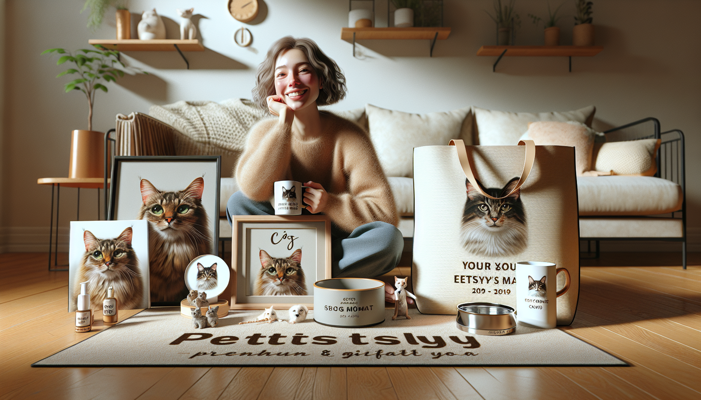

If you have ever shopped for a cat lover, you already know one thing is true: generic gifts rarely feel special enough. Cat people love products that celebrate their pets in a personal, meaningful way. That is exactly why personalized cat products continue to grow in popularity. They are thoughtful, emotional, practical, and highly giftable all at once.
For pet owners, gift shoppers, and even dog lovers shopping for their cat-obsessed friends, custom pet items check all the boxes. They turn everyday products into keepsakes. They make people smile. And most importantly, they are the kinds of products customers are genuinely excited to buy.
So what kinds of personalized cat products actually sell? Not just the ones that look cute in photos, but the ones people add to cart, gift for birthdays and holidays, and come back to buy again? In this guide, we are breaking down the top-performing types of custom cat gifts, why they resonate with buyers, and what makes them stand out in a crowded marketplace.
The appeal of personalized pet products is easy to understand. Pets are family, and cat owners love seeing their furry companions represented in their homes, accessories, and gifts. A personalized item feels more intimate than a standard cat-themed product because it reflects a real pet, a real name, and a real bond.
These products also perform well because they fit so many buying occasions. Shoppers look for customized cat gifts for:
Unlike trend-based novelty items, personalized cat products have emotional staying power. That emotional connection often leads to higher purchase intent, better gift value, and stronger word-of-mouth recommendations.
One of the easiest personalized cat products to sell is custom drinkware. Mugs, tumblers, and cups are affordable, practical, and easy to gift. They are also products people use every day, which gives them strong value in the eyes of shoppers.
A personalized cat mug can feature a pet's name, a custom illustration, a portrait-style design, or a funny phrase that reflects the owner's personality. This combination of usefulness and sentiment makes mugs a top choice for both self-purchase and gifting.
Why they sell so well:
For best results, the most successful custom cat mugs feel polished and personal rather than overly cluttered. Clean design, readable text, and charming artwork make a huge difference.
Seasonal products can be incredibly strong sellers, and personalized cat ornaments are one of the most dependable examples. During the holiday season, shoppers actively search for custom gifts that feel heartfelt and unique. A cat ornament with a pet's name or likeness instantly becomes more than decor. It becomes a memory.
These items are especially popular with gift buyers who want something small but meaningful. They are also ideal for multi-pet households, where customers may order several ornaments at once.
Popular options include:
Because ornaments are tied to yearly traditions, they often become treasured keepsakes that buyers display again and again. That repeat emotional value is a major reason they continue to sell.
One of the most meaningful categories in personalized pet products is memorial gifting. Losing a cat is heartbreaking, and many pet owners look for gentle, beautiful ways to honor that bond. Personalized memorial products offer comfort while helping people remember their beloved companion.
Although this category requires sensitivity in both design and messaging, it can be one of the most appreciated product types available. Customers are not just buying an item. They are seeking something that helps preserve a cherished memory.
Best-selling memorial cat products often include:
The reason these products actually sell is simple: they meet an emotional need. When designed with warmth and care, they become deeply meaningful gifts for grieving pet parents, friends, and family members.
Some of the strongest-selling personalized cat products are not purely decorative. They are useful home items that fit naturally into everyday life. Buyers love products that celebrate their pets while also serving a function.
This includes items like personalized feeding mats, cat bowl stations, welcome signs, tote bags, and storage bins. These products work especially well because they blend pet pride with convenience. A custom feeding mat with a cat's name, for example, feels stylish, functional, and tailored to the home.
Practical personalized products often perform well because:
For shoppers who want something beyond a novelty item, personalized home goods are a perfect balance of charm and utility.
Cat lovers are passionate about their pets' unique quirks. That is why products that capture personality tend to connect so well with buyers. Whether a cat is mischievous, regal, sleepy, dramatic, or endlessly curious, shoppers love products that reflect those traits.
Customized gifts with playful phrases, breed-specific artwork, or pet-inspired illustrations can feel incredibly personal, even beyond just adding a name. In many cases, the best-selling products are the ones that make customers say, “That is so my cat.”
Examples include:
When a product combines humor, style, and personal detail, it becomes highly shareable and giftable. That is a big reason these items stand out in the personalized pet market.
Not every custom cat item becomes a bestseller. The products that consistently perform well tend to share a few important qualities. They are emotionally relevant, visually appealing, and simple for customers to understand and customize.
Here is what usually drives strong sales:
For sellers and shoppers alike, the takeaway is the same: personalization works best when it enhances the product rather than overwhelming it. A simple, well-made item with meaningful customization will often outperform something overly complicated.
If you are shopping for a cat lover, start by thinking about how they will use the gift. Do they love cozy mornings with coffee? A custom cat mug may be perfect. Are they decorating for the holidays? An ornament is a thoughtful choice. Have they recently lost a pet? A memorial keepsake may be the most meaningful option.
It also helps to consider the recipient's style. Some cat owners prefer cute and whimsical designs, while others love elegant, minimal keepsakes. The best personalized cat gifts feel tailored not just to the pet, but also to the person receiving them.
When in doubt, choose something that feels both personal and practical. That combination tends to create the strongest reaction and the most lasting value.
Personalized cat products continue to sell because they tap into something timeless: the love people have for their pets. From custom mugs and ornaments to memorial gifts and practical home items, the best products are the ones that feel sincere, useful, and beautifully personal.
For cat owners, these items are a way to celebrate a beloved companion. For gift shoppers, they offer a thoughtful alternative to generic presents. And for anyone who knows how much pets mean to the people who love them, it is easy to see why customized pet gifts remain such a powerful category.
If you are looking for personalized cat products that are warm, memorable, and designed to make pet lovers smile, there is no better time to explore meaningful custom gifts.
Shop personalized pet products at SnoutAndAbout on Etsy.